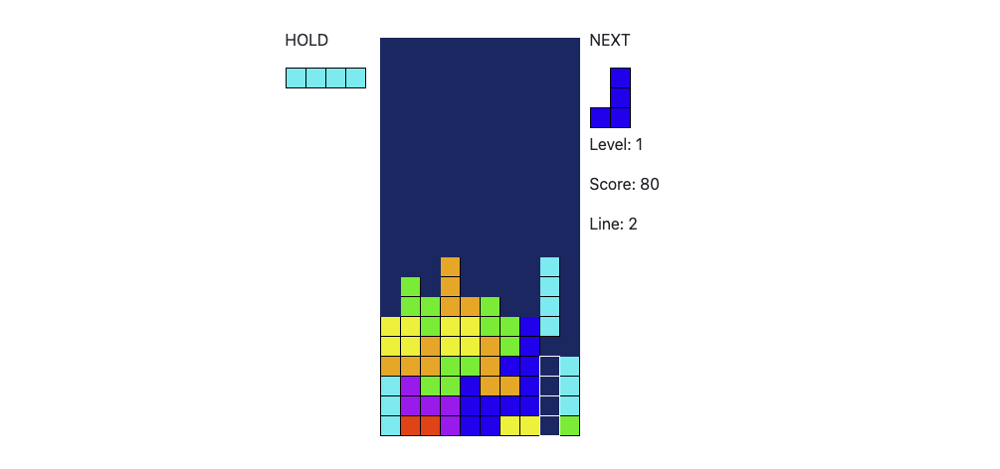

React Tetris with Zustand

Yet another React Tetris
Tetris was created in 1984, it is a simple game in which the player controls the falling “tetromino”, and clears them by combining tetromino into one line. It is one of the most popular computer puzzle games and has hundreds of implementations on different platforms.
When I am looking for some side project to work on, I remembered once seeing a Tetris implementation by React, there are surprisingly lots of implementations of Tetris in React as if there is a category of it.
However, as a personal goal to distinguish from other projects, I want to implement this as simply as possible. Then I think of Zustand, a framework I found when working on Apollo Reactive Store, it is much simpler than Redux and more readable than React hook.
Zustand
Zustand is a great framework, I recommend taking a look at the example on the home page. It has the benefit of a single monostore, without the complexity introduced by Redux. The usage is simple, we design the states we need for the Tetris, and combine the state and actions that will modify the state into the store.
1 | const useGame<State>((set, get) => ({ |
And than we can use the store like const { gameState, level, line } = useGame(state => state) in React Component.
Application logic
One of the goals for this project is to implement Tetris without too many abstractions and make the code as close as possible to the application logic. As a result, I write down the Application as:
1 | A game has 7 types of Tetrimino: I, L, J, Z, S, O, T. |
As the implementation in (link to the App.tsx)[], the logic can be pretty close to the description within the Zustand store, without too much jumping between code or extra modules/variables.
Game loop, Movement and Coyote Time
The main game loop only contains one simple logic, if the game is started, trigger ArrowDown every tick. The main game logic is actually inside the ArrorDown key.
When we press the left or right arrow key, we simply check if the position is empty, and move the current piece. But when moving down, it has a lot more to consider. If the piece can not move anymore, first we need to give some time for the player to adjust the piece, we called those “coyote time” in the game. (based on the cartoon character coyote, who can float a little bit before falling down the cliff). We record the time of the tick that the piece stall. If no movement after a certain time, or if moving but exceeds the time limit, we “lock” the piece into the board, clear the full lines, and pop the new piece. This gives the player some time to adjust the piece to the right place, especially useful when under high level since the piece falls in 1 sec and most of the time will be coyote time.
If the next piece can not be popped, the game will be over, which is also triggered when ArrowDown is triggered.
Rotation, Wallkick, and Smooth Criminal
Rotation is a tricky part of the application. Generally, there are couple of ways to implement this:
- Run matrix transition.
- Create 4 different pieces for each direction.
- Mix 1 and 2, create one piece centered in the pivot, and run matrix transition.
The problem with matrix transition is, we want the piece to rotate around the “pivot”, for example, a T piece will rotate around the centerpiece, but matrix transition will make the result “shifted” a bit. So it will need adjustment afterward, the solution I used is, to record the position of the pivot while matrix transitions, and shift the piece to keep the pivot in the same position.
Another interesting feature is, while rotating, if the position is not available, we want to shift the piece to the next empty place. That makes the player can maneuver the piece around under coyote time. Implementation is pretty straight forward, I compare the rotated piece with different positions, if the current position is not available, move down, else left, right, or up. Until an empty position is found, or return the original piece.
Combine with Coyote Time, this makes the game can be played smoothly under high speed, or else the game will end quickly at a high level.
Animation
There is 2 animation in the game, while hard drop the piece with space, the piece falls immediately, we play a “shaken” animation to indicate the speed. Another is when the line is full, we play clear animation. That animation is simple with CSS but complicates the application logic a bit due to the timing. I have to insert multiple “setTimeout” to play the animation. Maybe an async function/generator approach might be better.
Repeat button
While using keyboard input, it has a default repeat rate depending on the operating system setting. We want to overwrite it to have a consistent control, and also implement it for the button controller. For the keyboard basically, we listen to the keyboard “keydown” and “keyup” events, while the key is pressed, record the event in a global hash after 150ms repeat the event in a 50ms interval until the key is released.
For the button, it is a bit complicated due to the touch event also happening. Currently, when you touch the button, it will trigger events in this sequence:
- touchStart
- touchEnd
- mouseDown
- mouseUp
So we have to record the touch event in touchStart, and reset it after the final mouseUp event, also support the case for only “mouseDown” and “mouseUp” which is so confusing just by describing it… however, I reference other implementations and come out with logic for it.
Conclusion
Tetris is a game that is pretty simple but includes a lot of details to make the game more playable. It is pretty fun to dig into those history and implementation details and eat dog food for fun all the time. I am pretty happy with the result, Although I might need to put more effort into design in the future version…
References
https://github.com/brandly/react-tetris
https://github.com/chvin/react-tetris
https://tetris.com/play-tetris
https://tetris.wiki/
Comments